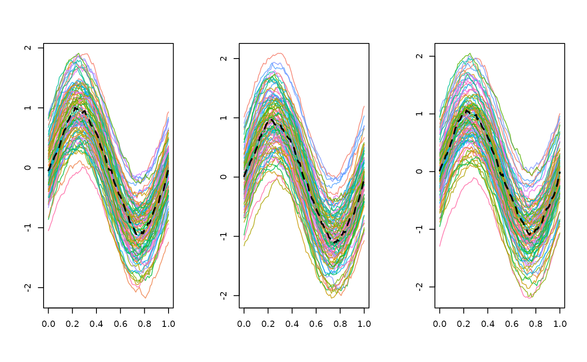

This method computes the sample median of a multivariate functional dataset based on a definition of depth for multivariate functional data.
median_mfData(mfData, type = "multiMBD", ...)the multivariate functional dataset whose
median is required, in form of mfData object.
a string specifying the name of the function defining the depth
for multivariate data to be used. It must be a valid name of a function
defined in the current environment, default is multiMBD.
additional parameters to be used in the function specified by
argument type.
The function returns a mfData object containing the desired
sample median.
Provided a definition of functional depth for multivariate data, the corresponding median (i.e. the deepest element of the sample) is returned as the desired median. This method does not coincide with the computation of the cross-sectional median of the sample of the point-by-point measurements on the grid. Hence, the sample median is a member of the dataset provided.
N = 1e2
L = 3
P = 1e2
grid = seq( 0, 1, length.out = P )
# Generating a gaussian functional sample with desired mean
# Being the distribution symmetric, the sample mean and median are coincident
target_median = sin( 2 * pi * grid )
C = exp_cov_function( grid, alpha = 0.2, beta = 0.2 )
# Strongly dependent components
correlations = c( 0.9, 0.9, 0.9 )
mfD = mfData( grid,
generate_gauss_mfdata( N, L,
correlations = correlations,
centerline = matrix( target_median,
nrow = 3,
ncol = P,
byrow = TRUE ),
listCov = list( C, C, C ) )
)
med_mfD = median_mfData( mfD, type = 'multiMBD', weights = 'uniform' )
# Graphical representation of the mean
oldpar <- par(mfrow = c(1, 1))
par(mfrow = c(1, L))
for(iL in 1:L)
{
plot(mfD$fDList[[iL]])
plot(
med_mfD$fDList[[iL]],
col = 'black',
lwd = 2,
lty = 2,
add = TRUE
)
}

par(oldpar)